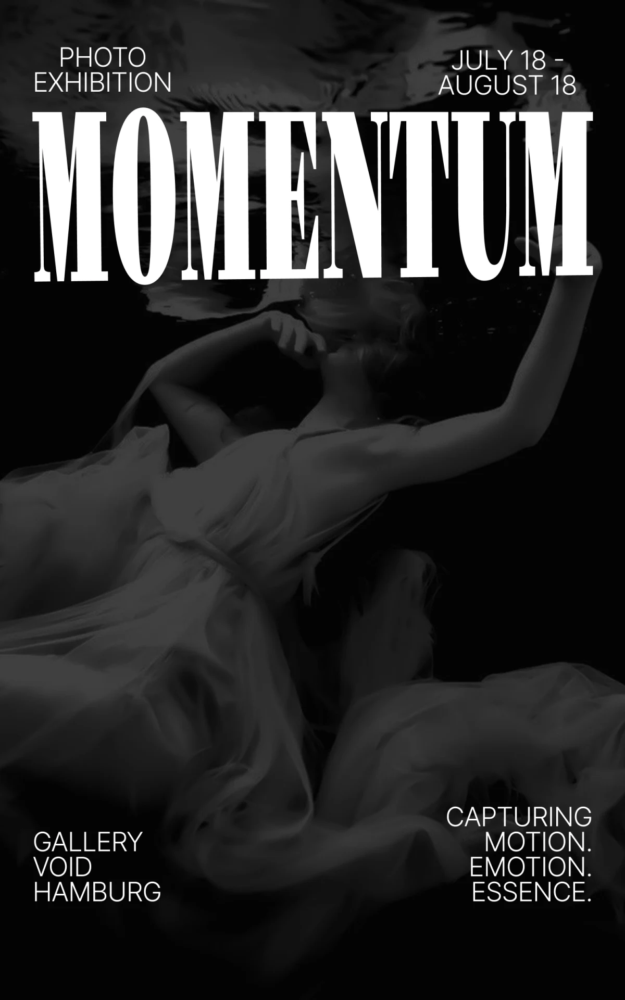
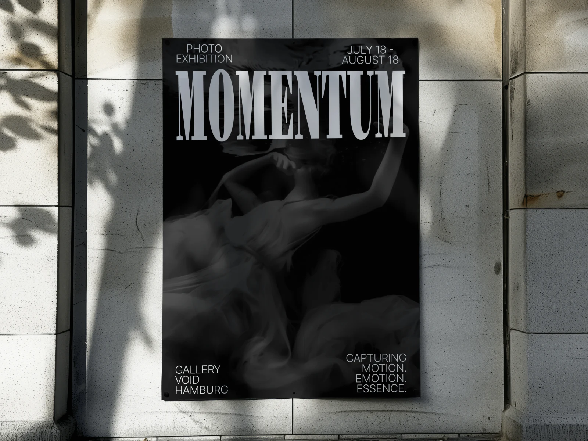

MOMENTUM
Плакат фотовыставки: подводная съёмка и антиква во всю ширину.

- Клиент
- Gallery Void, Гамбург
- Задача
- Плакат фотовыставки MOMENTUM в Gallery Void (Гамбург), период 18 июля — 18 августа: передать тему движения и эмоции, дать даты и адрес площадки.
- Роль
- Дизайн, композиция, работа с типографикой, подбор фотоматериала.
Выставка о движении, поэтому плакат должен показать движение, а не назвать его. Взят подводный кадр: вода замедляет тело и раздувает ткань, и в одном статичном изображении читается вся траектория жеста — это точнее любого перечисления работ или имён авторов. Съёмка оставлена в чёрно-белом, чтобы плакат работал как экспонат, а не как реклама.
Титул набран узкой антиквой с высоким контрастом штриха и растянут во всю ширину листа: классическая форма букв спорит с почти абстрактной фотографией, и это столкновение и держит композицию. Служебная информация разнесена по четырём углам мелким гротеском — тип события и даты сверху, площадка и подзаголовок снизу — так, что центр остаётся полностью свободным под изображение. Всё, кроме титула, набрано одним кеглем, иерархия строится позицией, а не размером.

Готовый плакат выставки с периодом проведения и адресом площадки по углам листа — пригоден для расклейки и для анонса в соцсетях.